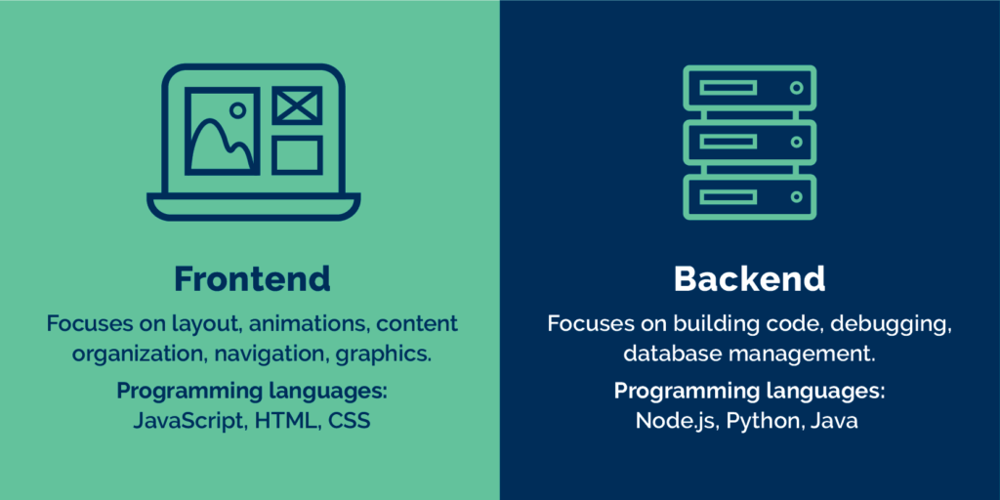

Mis on front-end ja back-end arenduse vahe?
Front-end on kõik, mida sa silmaga näed, kuid back-end on see mis telgitagustesse jääb. Näiteks osteldes veebipoes on front-end arendaja töö teile ilus ja kasutajasõbralik leht luua, back-end arendaja peab aga tagama teie andmete turvalise ja otstarbeka kasutamise.
Mis on full stack?
Full stack on front-end ja back-end kokku pandud. Full stack arendaja on universaalne spetsialist, kes oskab taustal käivaid programme siduda ka külastajale nähtava fassaadiga.
Millise tee peaksin mina valima?
Kui sulle meeldib luua midagi, mida sa saad ise disainida ja näha ega ei huvita sind loogika või programmide loomine, tuleks valida front-end. Kui sind aga huvitab, mis tegelikult serverites ja andmebaasides toimub ja meeldib loogika (ja võibolla ka matemaatika ;)), võib olla sulle põnevam back-end. Mõlemad oskused on aga tähtsad ja õppimine ei tee kunagi liiga!